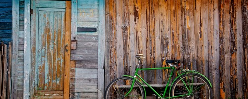

Nicosia Expats

Discussion post if needed will be at Facebook.com/groups/nicosiaexpats/
note: recurring events may not have the latest link associated with them.
Friday Jan-01 at: 10:00
City Markets at Akadimias Park, "Kafeneio to Koukounari" -
Location Nicosia
More: Link
NEPOMAK Discover Cyprus Programme 2016 (NDCP) -
Location Chypre
More: Link
Μία Απογευματινή Βόλτα στο Πάρκο / An afternoon ride in the Park -
Location Nicosia
More: Link
Nicosia Ultimate Pickup, Sun 3 July, 18:00 -
Location P.O. Box 23575,Nicosia
More: Link
Let’s break stereotypes: the Mafia in popular culture -
Location Αγράφων 11, Στρόβολος,Nicosia
More: Link
Living The DREAM -
Location Nicosia
More: Link
Κάτω απ’ τ’ Άστρα | Cyprus Guitar Trio -
Location Αξιοθέας 8,Nicosia
More: Link
Yeni Türkü Konseri Final Gecesi Güzelyurt Portakal Festivali -
Location ecevit cad,Omorfo
More: Link
Yeni Türkü -
Location Omorfo
More: Link
Evening Cycling -Outdoor Activities | Social | Sport
Location Kolokasi Parking Area, Nicosia
More: Link
Monday Apr-18 at: 08:30
Falcons at Kolossi -Art Exhibitions
Location Kolossi Castle, Limassol
More: Link
Ancient Kition and the modern world of Larnaka -Art Exhibitions
Location Ancient Kition, Larnaca
More: Link
Wednesday May-11 at: 18:30
Introduction to Oil Painting -Educational
Location Leventis Gallery, Nicosia
More: Link
Glyn Hughes 1931-2014 -Art Exhibitions
Location Nicosia Municipal Arts Centre, Nicosia
More: Link
Socratis Socratous 'Casts of an Island' -Art Exhibitions
Location Point Centre for Contemporary Art, Nicosia
More: Link
Wednesday Jun-15 at: 00:00
Doros Heracleous - ReAdaptions -Art Exhibitions
Location Gallery Kypriaki Gonia, Larnaca
More: Link
Summer Activities -Educational | Kids and Family
Location The Little Worry People Art and Drama Studio, Nicosia
More: Link
Summer Kids University | Young Activists -Educational | Kids and Family
Location ARTos Cultural and Research Foundation, Nicosia
More: Link
Squeegee Riders -Art Exhibitions
Location To Phytorio, Nicosia
More: Link
Photo exhibition - children refugees -Art Exhibitions | Charity | Kids and Family
Location Fotodos, Nicosia
More: Link
Seven Stories. Lace and Modern Art -Art Exhibitions
Location Athienou Kallinikeio Municipal Museum, Larnaca
More: Link
Classical Voice Recital -
Location Nicosia, Cyprus
More: Link
Mason Bar Presents * Fantastic 4* -
Location Limassol, Cyprus
More: Link
Performing Arts Summer School -Educational | Kids and Family
Location Limassol Theatre Arts School, Limassol
More: Link
POTN Crew party at New Division -
Location New Division, Nicosia
More: Link
Echo Presents Vagia Thursday 30 June Starts at 22:00 -
Location Echo, Leoforos Evagorou A. 9, Nicosia, Cyprus, Nicosia, Cyprus
More: Link
Dimitris Mylis - Live Acoustic -
Location Neverland Rock Bar, 1, Nikiforou Foka, Nicosia, Cyprus
More: Link
Dimitris Mylis @ Tafjak in Nicosia, Cyprus -
Location Nicosia, Cyprus
More: Link
Echo Presents Vagia Thursday 30 June Starts at 22:00 -
Location Echo, Leoforos Evagorou A. 9, Nicosia, Cyprus, Nicosia, Cyprus
More: Link
Dimitris Mylis @ Tafjak in Nicosia, Cyprus -
Location Nicosia, Cyprus
More: Link
Πριν τον Φέγγαρο Vol.1 | Βelua στο Faneromeni 16 -
Location Nicosia, Cyprus
More: Link
Friday Jul-01 at: 00:00
Yaala Ballin Jazz Vocal Workshop -
Location University of Nicosia, Research and Technology Building, Egkomi, Cipru
More: Link
Yaala Ballin Jazz Vocal Workshop -
Location University of Nicosia, Research and Technology Building, Egkomi, Cipru
More: Link
Βασίλης Καζούλης Live at Anjeloose bar 1-2 Ιουλίου -
Location Limassol, Cyprus
More: Link
Βασίλης Καζούλης Live at Anjeloose bar 1-2 Ιουλίου -
Location Limassol, Cyprus
More: Link
Yaala Ballin Jazz Vocal Workshop -
Location University of Nicosia, Research and Technology Building
More: Link
Milonga Tango Del Encanto + Seminar -
Location Semeli Hotel, 10 Petraki Giallourou, Nicosia, Cyprus
More: Link
Game On Ledras Gaming Bazaar & SFV Tournament -
Location Ledras Street, Nicosia, Lefkoşa
More: Link
NDC's annual showcase "ON AIR" -
Location Strovolos Municipal Theatre, Nicosia, Cyprus
More: Link
Yoga Anatomy training Cyprus -
Location YOGA Europe WYA, 9 Stasandrou street Flat 301 & 302, Nicosia, Cyprus
More: Link
Wing Chun Evolution Seminar -
Location Peace By Praxis - Applied Meditation Arts, Nicosia, Cyprus
More: Link
Cyprus Regional Training July 9th 2016 -
Location Filoxenia CONFERENCE CENTER, Nicosia, Cyprus
More: Link
Λάρνακα ΟΠΑΠ 3x3 -
Location Larnaca Φοινικουδες, Nicosia, Cyprus
More: Link
Lemesos Rock City Fest DAY 2 -
Location Potamos Germasogeias (parking lot)
More: Link
Lemesos Rock City Fest DAY 2 -
Location Potamos Germasogeias (parking lot)
More: Link
FIBA U16 European Championship 2016 Division C -
Location Nicosia, Cyprus
More: Link
Cyprus Deputy District Governor Handover Ceremony -
Location Cleopatra Hotel, 8 Florinis Street, Nicosia, Cyprus
More: Link
2x2 Friday FIFA Championship Nicosia -
Location Starbucks, Griva Digeni & 48 Themistokli Dervie Str,., Nicosia, Cyprus
More: Link
Klimaxx @ Canteen in Nicosia, Cyprus -
Location Nicosia, Cyprus
More: Link
Klimaxx @ Canteen in Nicosia, Cyprus -
Location Nicosia, Cyprus
More: Link
mononome @ Notes & Spirits in Nicosia, Cyprus -
Location Nicosia, Cyprus
More: Link
mononome @ Notes & Spirits in Nicosia, Cyprus -
Location Nicosia, Cyprus
More: Link
SCANNER LIVE: Power of the Night Festival XI -
Location @Camelot Park, Nicosia, Cyprus
More: Link
NEW! TRX Suspension Training Course (STC) Level 1 -
Location CrossFit REVOLT, 20 Vithleem, Nicosia, Cyprus
More: Link
Monday Aug-01 at: 00:00
4 Hour workshop with Sir Anthony Hopkins. -
Location Hilton Park Nicosia, Griva Dighenis Avenue, Nicosia, Cyprus
More: Link
Friday Sep-30 at: 00:00
Cyprus Tango Marathon 'Embracing Aphrodite' at Historical Bedesten -
Location Bedesten, Nicosia
More: Link
Wednesday Oct-19 at: 00:00
20th Annual Conference “Power to the People - Celebrating 20 years of the strength within” -
Location Nicosia, Cyprus
More: Link
MED Business Expo 2016 -
Location Filoxenia CONFERENCE CENTER, Nicosia, Cyprus
More: Link
Saturday Nov-12 at: 00:00
The Mind, Body & Spirit Festival, Nicosia 2016 -
Location Filoxenia CONFERENCE CENTER, Nicosia, Cyprus
More: Link
Thursday Dec-01 at: 00:00
9th CyDNA Conference with CySPEN Particiaption -
Location Hilton Cyprus, 98 Archbishop Makarios III Avenue, Nicosia, Cyprus
More: Link
4th International Conference of Photography & Theory Icpt2016: Photography & the Everyday -
Location Nicosia Municipal Arts Centre [NiMac], Nicosia
More: Link
Valentinos Charalambous. Of clay and glaze... -Art Exhibitions
Location Bank of Cyprus Cultural Foundation, Nicosia
More: Link
I Can -
Location Cyprus, Nicosia, Cyprus
More: Link
compiled by Vipar.
This list is by no means comprehensive as art exhibitions, clubbing events, and non-English
events are usually not included.
Do you receive this via a forward? (or a forward of a forward?) If you'd like a direct mail, just sign up by clicking here
|